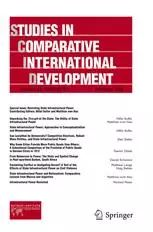
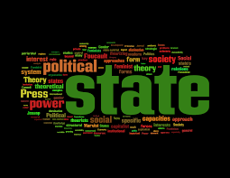

收录于合集
#比较政治学 121 个
#国家建构与国家发展 70 个
文献来源：Hillel Soifer, and Matthias vom Hau, “Unpacking the Strength of the State: The Utility of State Infrastructural Power” , Studies in Comparative International Development , (2008) 43:219–230
作者简介 ：Hillel Soifer,天普大学(Temple University)政治学系副教授，研究兴趣包括国家能力、拉美政治等，个人介绍见https://www.hillelsoifer.com/；
Matthias vom Hau, 西班牙巴塞罗那国际研究所比较政治助理教授，研究兴趣包括种族问题、拉美政治、国家形成等，个人介绍见https://matthiasvomhau.weebly.com/
**
**
本文是 ** Studiesin Comparative International Development** 于2008年推出的“国家基础性权力”专题的首篇文章。该文呼吁学者们重视迈克尔·曼（Michael Mann）提出的“基础性权力”这一具有重大创新意义的概念，在理解其深刻内涵和发展空间的基础上将其运用到各实质性领域的研究之中。该系列文章对于我们当下进一步认识国家性与国家发展仍有重要的启发作用。

重视基础性权力概念
国家对发展和人类福祉极为重要。为了更好地理解促使某些国家能够保障和平和提升经济发展、福利和民主的因素，通过剖析经常被滥用的国家的强弱（state strength and weakness）概念来加深我们对于强国家和弱国家的理解是必要的。
当学者思考国家力量（state strength）的时候，他们通常诉诸评估国家能力（state capacity），广义上是国家官僚机构的职能，国家与社会行为者关系，以及它的空间和社会影响力（spatial and societal reach）。分析者往往用国家能力来解释诸多政治经济社会问题。但学者关注国家能力的不同维度：较为系统的两个是国家相对于社会行为者的相对自主性和官僚机构的专业化，第三个维度是国家影响力或权力（state reach or power）。
实际上，这些学者正在探索迈克尔·曼所谓的国家的基础性权力：在声称统治的领土内进行控制和执行政策选择的制度化能力。尽管曼对基础性权力概念的发展是在20多年前，但社会科学家并没有围绕它发展出经验性和概念性的知识主体。本系列文章的目标是为填补这个空白提供一个路线图，显示基础性权力这一概念框架对于评估国家的影响力或权力、解释它的起源和影响的效用。

尽管很少的学者明确使用曼的概念，但是许多学者在其他术语中探索国家以及它与社会行为者的关系。非常多的学者在将他们的分析与曼的基础性权力框架建立明确联系中受益。无论是从国家力量或均质性角度研究民主，还是关注国家在领土内执行政策的能力，还是解释国家在影响意识形态与文化的作用，学者们的这些研究都被曼的基础性权力概念所囊括。另外，经济史学家对于财产权的有效性和国家提供公共物品的关注揭示了曼的概念在该领域的重要性，他们非常关注国家渗透社会和执行政策的能力。
在国家层面的研究中，曼的概念有两个重要优势——突出了国家的空间维度和国家权力的关系性质（the spatial dimension of the state and therelational nature of its power）。哥伦比亚和尼加拉瓜的国家能力空间不平衡性（unevenness）有助于理解曼的概念框架，对不均匀的国家基础性能力的关注引导学者开展地方和地区层次的国家动力调查。另一方面，基础性权力不仅从国家的行政活动中表现出来，它也扎根于国家与非国家行为体的组织化交缠(organizational entwining)之中；国家基础性权力也由不同的国家机构间的关系所塑造。基础性权力的关系性质使得分析者从过去的将国家与社会看作并列的对立者的争论转向检验此二者之间多变的互动形式。
区分概念的边界
1.国家基础性权力与专制性权力
专制性权力：国家领导人依据自己的偏好颁布政策的程度
基础性权力：官僚执行国家精英所选择的政策的程度
曼对基础性和专制性权力的区分反映了国家的官僚能力和国家自主性之间的区别。
2.国家基础性权力与国家的官僚职业主义
国家基础性权力关注的是在宣称统治的领土范围内，国家控制和管理社会关系的能力；韦伯主义关注官僚制的性质。在官僚的培训和专业化与国家推行政策的能力之间存在一种联系，因为政策通常是由国家代理人执行的。但Ziblatt认为可以通过辨别高层次官僚制定政策的能力与较低行政层级执行政策的能力来区分国家官僚的职业主义和国家权力。较高层次特征是官僚职业注意，较低层次的特征是提供国家执行能力的有关信息。
官僚职业主义可能是国家基础性权力众多成因中的一个潜在因素（Schensul，Ziblatt）。相反地，基础性权力对于韦伯式的国家机器的绩效是重要的，基础性权力也许是官僚有效性的必要前提（Soifer）。
3.国家基础权力与国家自主性
基础性权力和国家自主性之间的因果关系也是不明确的。Soifer认为曼的基础性权力概念创造之初就预设了国家机器相对于市民社会的一定程度的自主性。没有相对于社会行为者的自主性，国家就无法在它的领土内控制社会和规范社会关系。同时，基础性权力的扩大和再生并不必然依赖国家自主性。对二者的因果关系进行更加深入研究的可能途径是确定国家自主性的不同类型以及它们对基础性权力的不同影响。
4.国家基础性权力与暴力
许多对于国家的分析，包括曼本人，都始于韦伯式的国家概念——作为合法暴力的垄断者，但是这个概念的出发点提出了两个明显的分析难题：国家力量在国内使用暴力是否反映了基础性权力；国家基础性权力来自非国家行为者的暴力。
国家暴力是控制社会和执行政策的一种手段。诉诸暴力反映了国家缺乏必要的与公民社会的组织化交缠来实现它的目标，在此意义上，国家暴力的高水平并不意味着一个基础性权力强的国家。但是国家暴力也并不是一个基础性权力弱的国家的必然迹象，即使是基础性权力强的国家在某些情况下也可能诉诸暴力。韦伯的国家概念强调基础性权力强的国家拥有对合法暴力的唯一主张，但它并没有阐明国家运用暴力的水平。
反过来，非国家行为者使用的暴力也可能被国家基础性权力所塑造。国家权力和民间暴力的之间的关系有两种对立的观点：一方面，民间暴力可能是基础性权力弱的国家的特征，因为国家缺乏能力来控制它；另一方面，国家控制和管理社会关系的能力（也就是它的基础性权力）恰恰是社会行为者使用暴力的诱因。

文章贡献
本专题的贡献不仅仅在于显示曼的概念对于各个实质性领域的有效性，通过剖析国家基础性权力和区分它的概念性边界，本组文章也提出了与国家研究的核心难题与争议进行对话的广阔议题。
1.文章对于国家基础权力的精确概念化对民主研究有重要推动作用。
2.让我们认识到曼的两个概念没有有效区分空间和社会控制。社会控制在分析中需要与空间控制相区别，国家基础性权力的实际运作可能不仅仅随领土变化，也可能随社会身份而变化；空间和社会控制也不会自动转化为国家执行政策的能力。
3.有助于区别国家自主性权力和公共物品供给。基础性权力强的国家未必有能力提供公共物品。
4.超越了曼对于合法性的研究。曼并没有在国家基础性权力的概念化中发展合法性概念，文章认为国家基础性权力有助于合法性建设，主要有身份合法性与结果合法性。
5.指明了国家基础性权力和国家行动之间的复杂关系。国家基础权力没有好坏之分，但是国家基础性权力的使用目标可能会影响它是如何展开的以及它产生的实际结果。
政观编辑部